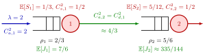

Tandem Queue¶
Definition¶
A tandem queue (stations "in tandem", that is, in line) is a network of stations in which every job enters at station 1, moves after service at station to station , and leaves the network after station . Station has servers, service times with scv , and its own queue; is the scv of the inter-arrival times at station , and that of its inter-departure times. Jobs arrive externally at station 1 only, at rate .
The defining link between the stations is that the departure process of station is the arrival process of station ; in particular .
Interpretation¶
A tandem queue is a production line: each job needs several processing steps in a fixed order, and what one station sends out is exactly what the next one receives. Its total time in the line is the sum of the times at the stations.

The figure shows Example 1. External jobs reach station 1 with . Station 1 smooths this stream a little, so station 2 receives arrivals with , computed with the departure scv approximation. Each station is then treated as a single queue with Sakasegawa's formula, and the expected sojourn times are added.
Two facts make this work. First, if every station is rate stable, jobs leave each station at the rate they enter, so all stations face the same arrival rate and have utilization ; the whole line is stable only if every . Second, by linearity of expectation , even though the station sojourn times are dependent. What does not carry over is the arrival variability: downstream stations see the departures of upstream stations, which need not look like the original input. A machine with nearly constant service times sends nearly regular jobs downstream, so a Poisson model for the second station's arrivals would be poor (Exercise 7.1.5).
Common slips are to locate the bottleneck by the longest service time rather than the highest utilization (Example 2), and to add the dimensionless numbers as if they were times (Example 3).
Key Results¶
- Throughput: in a rate-stable tandem line every station has arrival and departure rate , and is required at every station; the station with the largest is the bottleneck.
- Sojourn time: with .
- stations (Section 7.1): apply Sakasegawa's formula station by station, with from the Departure SCV Approximation.
- Variability propagates: lowering lowers and , hence and , and so on down the line; the notes therefore advise improving from the start of the chain.
- stations (Section 7.3): the departures of a stable M/M/1 queue form a Poisson process of rate , so every station is again and exactly.
- In terms of a routing matrix, a tandem line has for and exit probability .
Examples¶
1. Two stations (Exercise 7.1.6). Let per hour, , , minutes hour and minutes hour. At station 1, , so and
Station 2 receives and has , so and
In total hours.
2. Which station is the bottleneck? (TF 7.1.2). Jobs arrive at per hour. Station 1 has one machine with a deterministic service time of minutes; station 2 has two machines, each taking minutes per job. Station 2 has the longer service time, but while . Station 1 is the bottleneck.
3. Two stations and a unit check. With the rates of Example 1 but exponential arrivals and services, both stations are with and , and
The sum is not a time (TF 7.1.4): it is the expected number of jobs in the line, and Little's law turns it into hours, in agreement.
Prerequisites¶
Related Concepts¶
- Departure SCV Approximation
- Routing Matrix
- Open Queueing Network
- Jackson Product Form
- Little's Law
- Server Utilization
Sources¶
- Stochastic Operations Research · Week 7
- N. D. van Foreest, Sample Path Analysis and Simulation of Stochastic Systems, Section 7.1
Aliases: queues in tandem, tandem network, serial production line, stations in series, G/G/c queues in tandem, flow line Keywords: C_{a,2}^2 = C_{d,1}^2, \mathbb{E}[J] = \mathbb{E}[J_1] + \mathbb{E}[J_2], bottleneck, throughput, variability propagation, P_{i,i+1} = 1 Symbols: lambda, rho, sum
Last updated: 29 October 2026 20:42
Tandem QueueDeparture SCV ApproximationRouting MatrixSakasegawa's FormulaRate StabilitySojourn TimeM/M/1 QueueOpen Queueing NetworkJackson Product FormLittle's LawServer Utilization